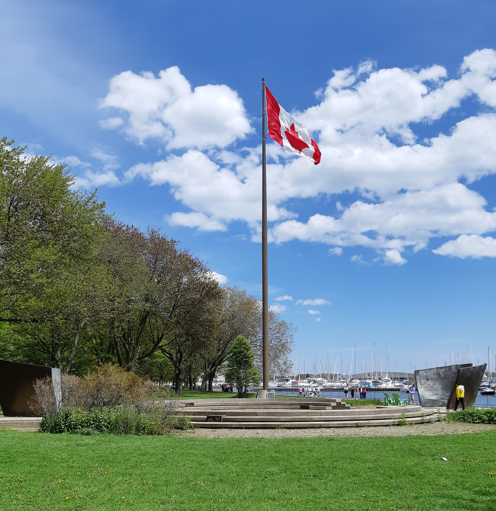

Coronation Park is a park and veteran´s memoriL in Toronto,Ontario,Canada.
Coronation
Park was built to honour the coronation of King George VI in 1937.Trees are planted to
honour
the Canadian men and women who participated in World War I and earlier wars.
Built
during
the Great Depression, the contructed on landfill on the shore of Lake Ontario. The park
also
has the Victory-Peace World War II monument located at water´s edge.
-
Coronation Park
-
Adam Beck Memorial
-
Princes´Gates
View of Victory Peace Monument
History
The memorial park was twice threatened to be removed. During the planning stages of theGardiner
Expressway , it was proposed to move Old Fort York to Coronation Park. This was
opposed by
a coalition of veteran's groups and historical societies.A second occurred in 1971 when it was
proposed to
expand Exhibition Place, turning the park into a new location for the midway amusements and
rides.
Veterans' and labour organizations successfully stopped the proposal.
The memorial was rededicated on
November 10, 2018 on the 100th-year anniversary of the end of World War I.It was rededicated by
Ontario
Lieutenant-Governor Elizabeth Dowdeswell, Toronto Mayor John Tory and members of
theCanadian
Armed Forces . The memorial is being restored during 2018 and 2019 using funds from a
Government of
Canada program to refurbish cenotaphs and memorials country-wide, the City of Toronto and private
sources.
The Adam Beck Memorial is a memorial in Toronto, Ontario, Canada in honour of the founder of Ontario Hydro, Sir Adam Beck. It is located in the landscaped median of University Avenue just south of Queen Street West. Designed by sculptor Emanuel Hahn, the monument was the first place entry in a design competition for a memorial to commemorate Adam Beck. It was unveiled in 1934.
History
Adam Beck, respected for his efforts in developing the province of Ontario's hydroelectricity
generation
and
transmission infrastructure and in bringing hydroelectricity into public hands, died in 1925. Four
years
later, a committee was appointed by Toronto City Council to determine how best to
commemorate
his
life, venerated as Ontario's greatest public servant at the time.[2] It recommended a bronze statue
on
University Avenue, and a design competition was initiated with a call for designs on 29 April
1929.
Emanuel Hahn won the competition, while Alfred Howell and G.A. Bachman placed
second
and
third, respectively. The statue was originally to be located in front of the 1915 Hydro-Electric
Power
Commission of Ontario Buildingbut this plan proved to be impractical because it would interfere with
access
to Toronto General Hospital across University Avenue. Hahn rejected the suggestion of Queen's Park
as a
possible site and after working with him to find an agreeable location, Toronto City Council
approved
the
site in the University Avenue median just south of Queen Street in February 1932.In spite of not
being
located in front of the Hydro-Electric Power Commission of Ontario office building on University
Avenue,
the
sculpture was oriented northward towards it as a symbolic link, and also to the Ontario Legislative
Building, where Adam Beck had served as a Member of Provincial Parliament.
The Princes´Gates is a triumphal arch and a monumental gateway at Exhibition Place
in
Toronto,Ontario, Canada. Made out of cement and stone, the triumphal arch is
flanked
by
colonnades on both of its sides, with curved pylons at both ends. The structure serves as the
eastern
gateway to the Canadian National Exhibition, an annual agricultural and provincial fair held at
Exhibition
Place.
The Princes' Gates was initially conceived in the 1920s, forming part of a larger
redevelopment
effort of the eastern portions of Exhibition Place. Work began on Princes' Gates in April 1927, and
was
completed several months later in August.
View of Victory Peace Monument

History
The Canadian National Exhibition (CNE) was established in 1879 at the foot of Dufferin
Street,
leasing the western-most portion of the Military Reserve attached to the Toronto Garrison. Over
time,
the
CNE expanded eastward and took over more of the Reserve. By the 1920s, it was now looking to expand
to
the
easternmost section of the Reserve site at the foot of Strachan Avenue.In 1924, the Chapman and
Oxley
architectural firm was contracted to make a 50-year development plan for the eastern portions of the
Exhibition Grounds, including the Princes´Gates.Princes' Gates was initially intended to serve as
the
main
entrance to a walled park.
Inspiration for the design of Princes' Gates came from other British
and
French triumphal arches that Chapman visited while visiting western Europe for the 1925 British
Empire
Exhibition.[3] Although plans for Princes' Gates were conceived in the early 1920s construction of
the
structure did not take place until 1927.Construction for the triumphal arches took place later that
year,
from April 14 to August 30, with the structure itself costing approximate CA$152,240.